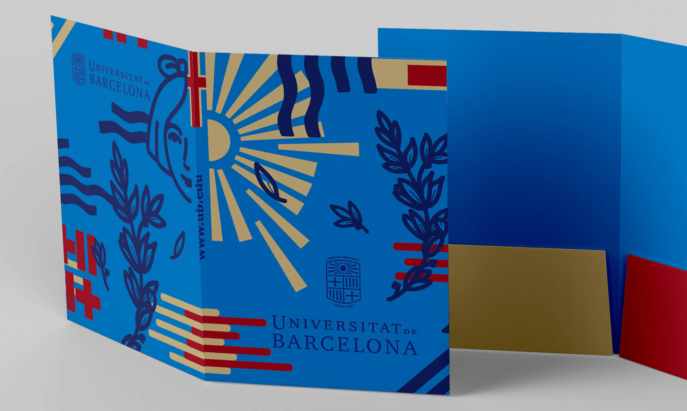
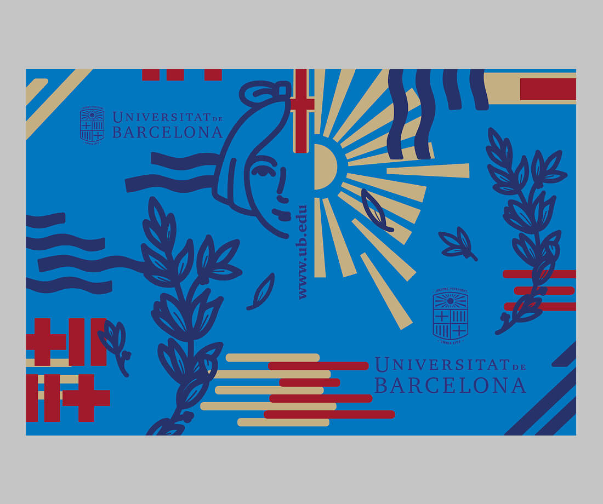
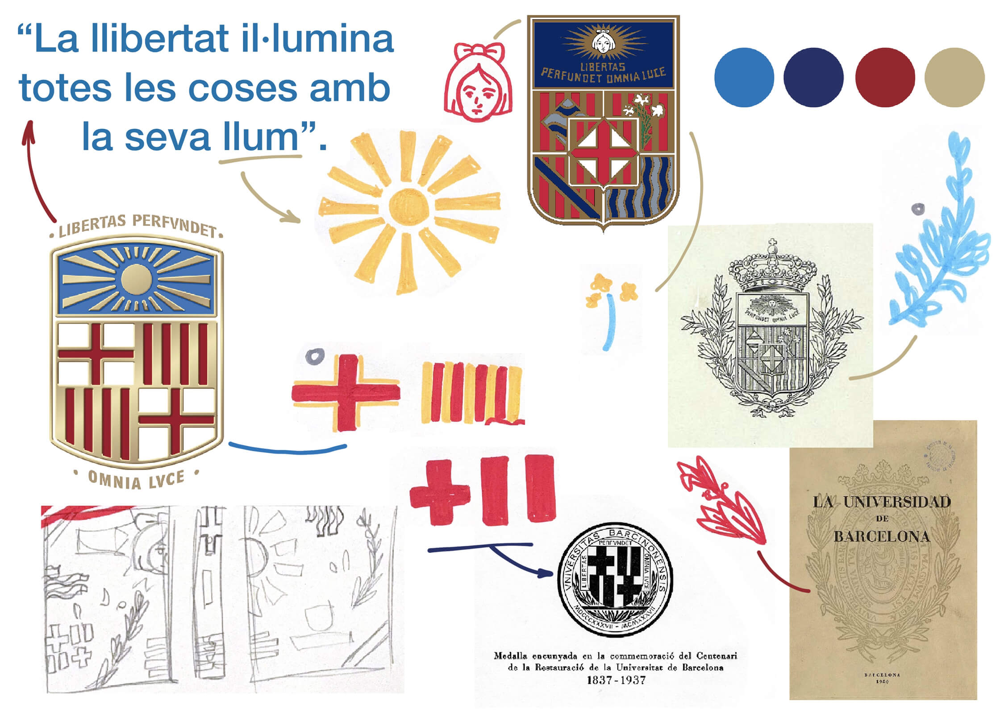

Metamorphosis and Vestiges:
UB Folder
2025
Competition Project

Finalist in the University of Barcelona's folder design competition for the 2025-2026 academic year.
This proposal, titled Metamorphosis and Vestiges, reflects on the 575 years of UB's history by analyzing its visual identity over time, its logos, symbols, and meanings, and merging them into a single design. Some symbols have endured, while others have evolved.
The final composition represents a visual "metamorphosis" that connects the university's legacy with innovation.

